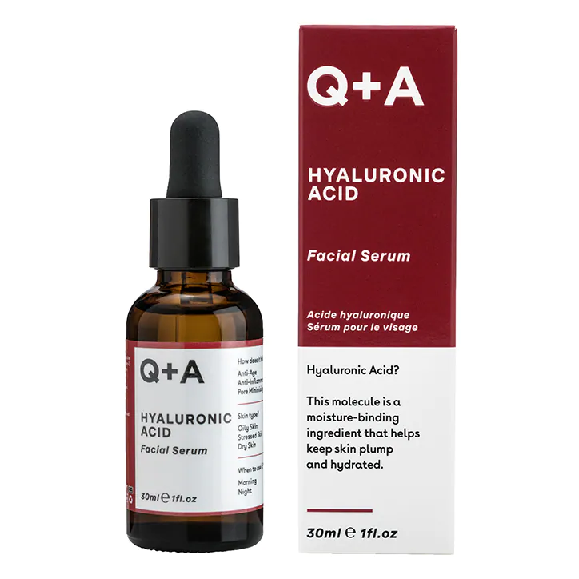

£6.50
Q+A's Hyaluronic Acid Facial Serum is a powerful natural moisturizer that can help rejuvenate and promote healthy skin. Despite its name, hyaluronic acid is not harsh on the skin - in fact, it's produced naturally in our bodies.This serum is formulated with a variety of natural ingredients that enhance the hydrating effects of hyaluronic acid, making it an ideal choice for even the driest skin.